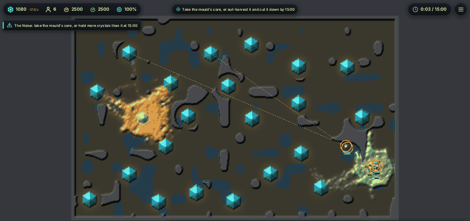
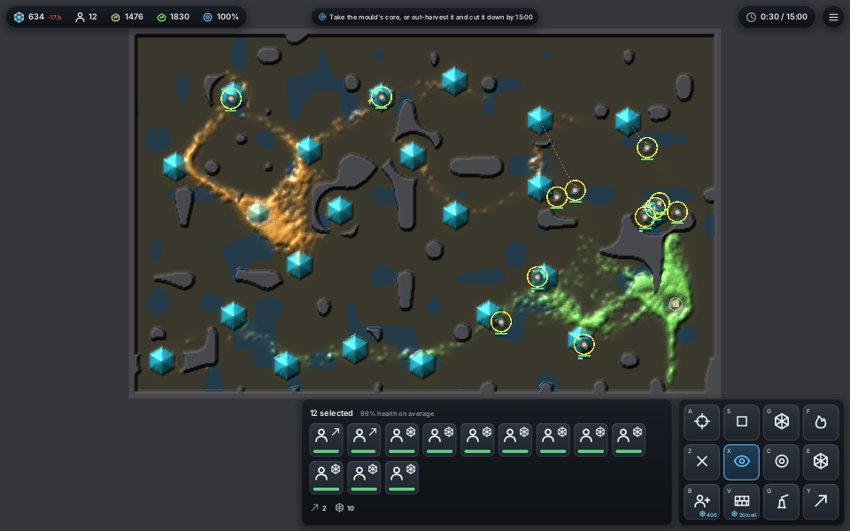
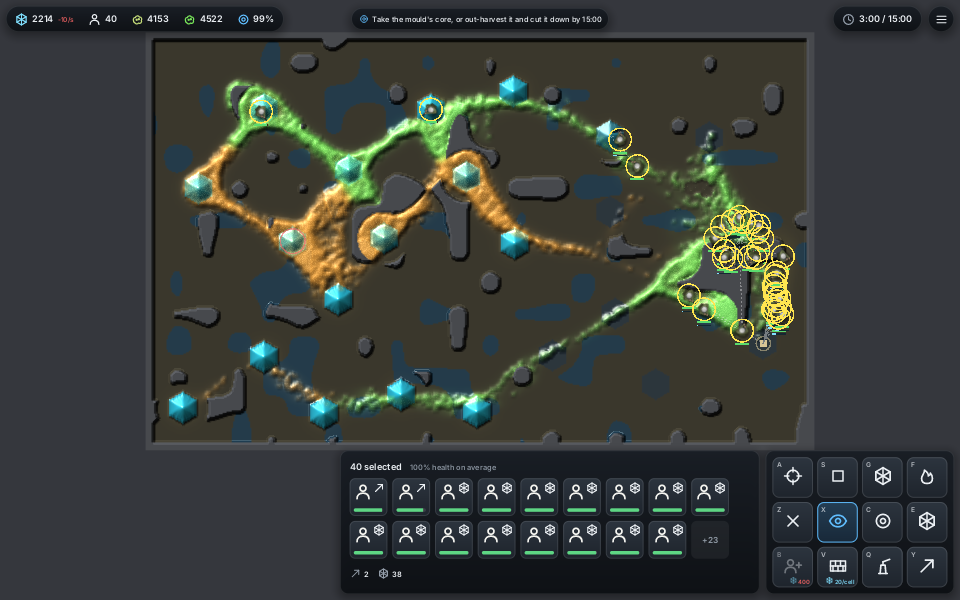

<title>Your Mould in the Window</title>
<meta name="claude:viewport-fit-sides" content="cover">
<link rel="stylesheet" href="https://fonts.googleapis.com/css2?family=Space+Grotesk:wght@500;700&family=Inter:wght@400;600&family=JetBrains+Mono:wght@400&display=swap">
<style>
/* Layout: one reading column; the GIF first with its counts, then how to play it, then what is still missing. */
:root {
  --bg: #f4f6f3; --fg: #1b211d; --muted: #5d685f; --line: #d5dcd5;
  --own: #2f9d62; --enemy: #c27a1a; --panel: #ffffff;
  --display: "Space Grotesk", "Segoe UI", system-ui, sans-serif;
  --body: "Inter", system-ui, -apple-system, sans-serif;
  --mono: "JetBrains Mono", ui-monospace, Menlo, monospace;
}
@media (prefers-color-scheme: dark) { :root:not([data-theme="light"]) {
  --bg: #121614; --fg: #e3e9e4; --muted: #95a198; --line: #2b332d;
  --own: #4cc684; --enemy: #e19a3c; --panel: #1a201c; color-scheme: dark } }
:root[data-theme="dark"] {
  --bg: #121614; --fg: #e3e9e4; --muted: #95a198; --line: #2b332d;
  --own: #4cc684; --enemy: #e19a3c; --panel: #1a201c; color-scheme: dark }
body { background: var(--bg); color: var(--fg); font-family: var(--body); line-height: 1.55; }
main { max-width: 860px; margin: 0 auto; padding-block: 28px 48px;
  padding-left: max(16px, env(safe-area-inset-left, 0px)); padding-right: max(16px, env(safe-area-inset-right, 0px));
  display: flex; flex-direction: column; gap: 22px; }
h1, h2 { font-family: var(--display); text-wrap: balance; margin: 0; }
h1 { font-size: 1.9rem; }
h2 { font-size: 1.2rem; }
p { margin: 0; max-width: 65ch; }
.lede { color: var(--muted); }
figure { margin: 0; display: flex; flex-direction: column; gap: 8px; }
figure img { width: 100%; border-radius: 6px; border: 1px solid var(--line); }
figcaption { font-size: 0.9rem; color: var(--muted); }
.key { display: flex; gap: 16px; flex-wrap: wrap; font-size: 0.9rem; }
.sw { display: inline-block; width: 12px; height: 12px; border-radius: 2px; vertical-align: -1px; margin-right: 6px; }
.wrap { overflow-x: auto; }
table { border-collapse: collapse; width: 100%; font-variant-numeric: tabular-nums; font-size: 0.92rem; }
th, td { text-align: right; padding: 6px 10px; border-bottom: 1px solid var(--line); white-space: nowrap; }
th:first-child, td:first-child { text-align: left; }
th { font-weight: 600; color: var(--muted); font-size: 0.8rem; letter-spacing: 0.04em; text-transform: uppercase; }
ul { margin: 0; padding-left: 1.3em; max-width: 65ch; display: flex; flex-direction: column; gap: 4px; }
code, kbd { font-family: var(--mono); font-size: 0.86em; }
kbd { border: 1px solid var(--line); border-radius: 4px; padding: 0 5px; background: var(--panel); }
.caveat { background: var(--panel); border: 1px solid var(--line); border-left: 4px solid var(--enemy); border-radius: 6px; padding: 12px 14px; }
.note { font-size: 0.88rem; color: var(--muted); }
.pair { display: grid; grid-template-columns: repeat(auto-fit, minmax(260px, 1fr)); gap: 14px; }
.pair figure { min-width: 0; }
</style>
<main>
  <h1>Your own mould, in the game window</h1>
  <p class="lede">The gardeners now run on the GPU engine and play in the Larder World window. Your mould is green, the enemy amber. Two soldiers sow and lay road between the larder and a crystal; the rest farm. Shots fly through green and stop at the first amber. Seed 1, 2,500 walkers a side, software GPU in the cloud.</p>

  <figure>
    
    <figcaption>Seed 1, 0:03 to 3:00, a frame every 3 game seconds. Top bar: bank, soldiers, enemy walkers (amber icon), your walkers (green icon).</figcaption>
  </figure>
  <div class="key"><span><span class="sw" style="background:var(--own)"></span>Your mould (species 3)</span><span><span class="sw" style="background:var(--enemy)"></span>Enemy mould (species 0)</span></div>

  <div class="wrap"><table>
    <thead><tr><th>Time</th><th>Your mould</th><th>Enemy</th><th>Soldiers</th><th>Shots</th><th>Killed</th></tr></thead>
    <tbody>
      <tr><td>0:30</td><td>1,830</td><td>1,476</td><td>12</td><td>32</td><td>98</td></tr>
      <tr><td>1:00</td><td>1,947</td><td>1,403</td><td>18</td><td>89</td><td>230</td></tr>
      <tr><td>1:30</td><td>2,404</td><td>1,885</td><td>25</td><td>109</td><td>263</td></tr>
      <tr><td>2:00</td><td>3,225</td><td>2,494</td><td>35</td><td>149</td><td>341</td></tr>
      <tr><td>3:00</td><td>4,522</td><td>4,153</td><td>40</td><td>242</td><td>409</td></tr>
    </tbody>
  </table></div>
  <p class="note">Walkers alive, one run of the <code>sow</code> hand. Your mould stays ahead all three minutes, but the enemy closes from 1,403 to 4,153 after 1:00. No soldier died; the game did not end early.</p>

  <div class="pair">
    <figure><figcaption>0:30. Your mould 1,830, enemy 1,476.</figcaption></figure>
    <figure><figcaption>3:00. Your mould 4,522, enemy 4,153.</figcaption></figure>
  </div>

  <h2>Playing it</h2>
  <ul>
    <li>Start with <code>larder-world own=1</code>. Without it the game is unchanged.</li>
    <li>Select soldiers, then <kbd>W</kbd> Sow (feed your mould where they walk). Road is on the tools page: <kbd>E</kbd> then <kbd>Y</kbd> (lay its road where they walk). Press again to stop.</li>
    <li>The det cord on the tools page (<kbd>E</kbd> then <kbd>C</kbd>) cuts both moulds alike, so you can shape your own as well as cut the enemy's.</li>
    <li>Fire, strike and the craters hit only the enemy. Soldiers slow only in enemy slime.</li>
    <li>Your mould fights the enemy where they touch: walkers near more of the other side's trail change sides.</li>
  </ul>

  <div class="caveat">
    <p><strong>Update, 14 November.</strong> When the GIF above was recorded, both moulds on the GPU drew new walkers from one shared pool. Now each side may hold at most half of it, as on the CPU, so the enemy can no longer crowd your mould out of births. The GIF predates that change.</p>
  </div>

  <h2>Still to come</h2>
  <ul>
    <li>Timing on the GTX 1070 at 5,000 and 20,000 walkers, booked on the PC.</li>
  </ul>
</main>
